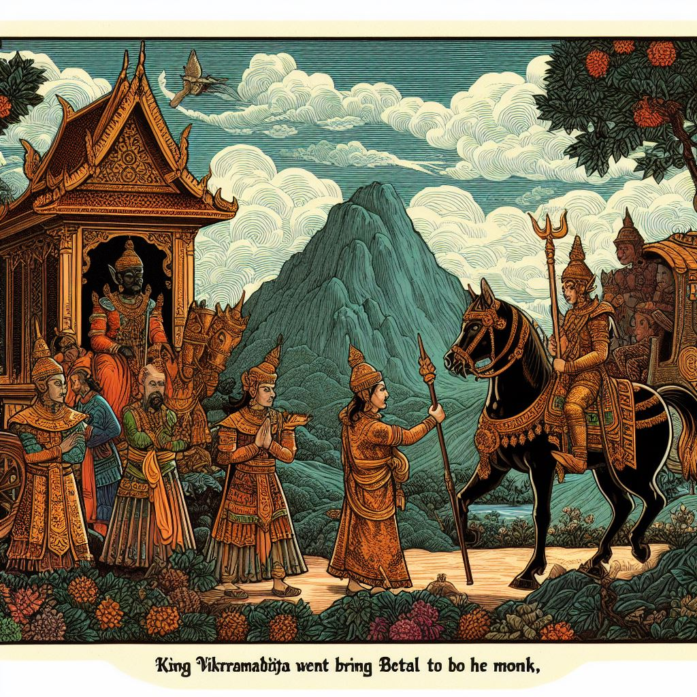
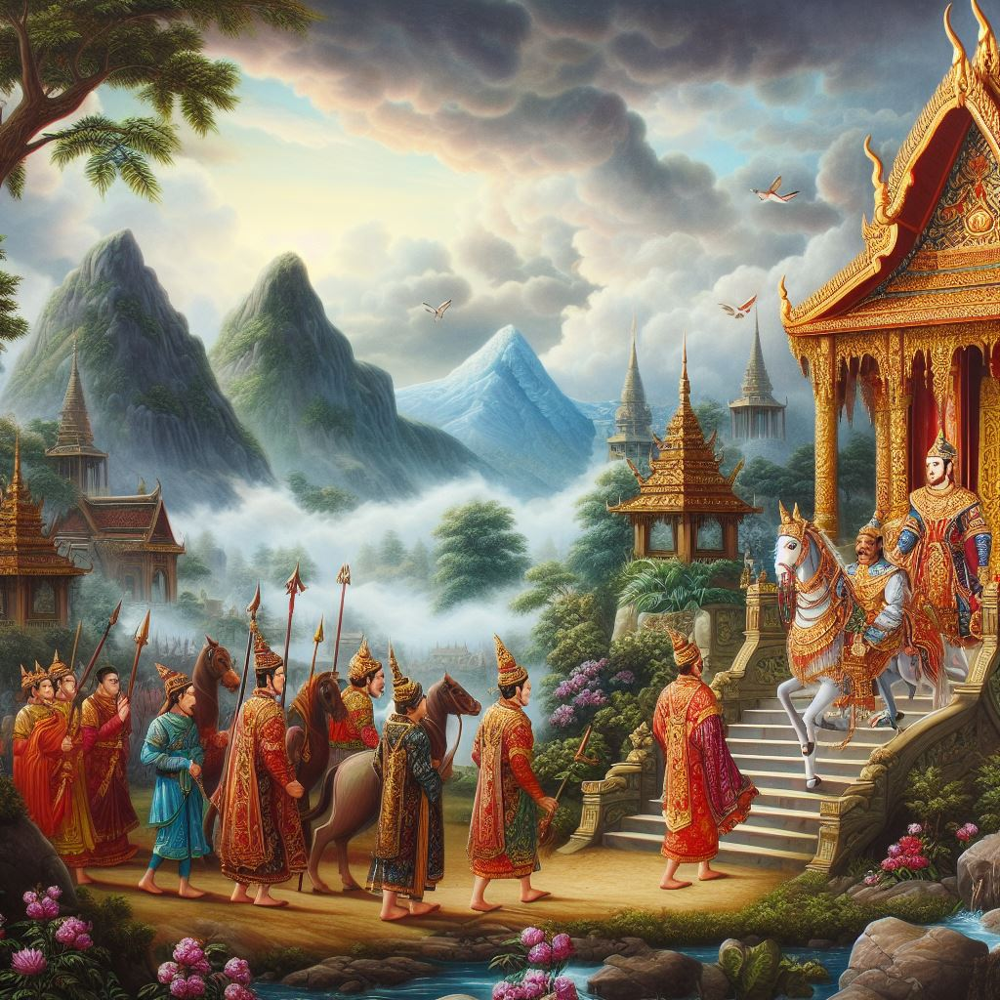

|

|
King Vikramaditya was the Prithvi Raj who ruled over the entire earth. King He used to go to the temple every day to worship where the people came to meet him and They used to give gifts and listen to their problems before the king. A monk also comes there And he would gift a fruit to the king and would not say anything. King When he cuts all those fruits and looks at them, he finds diamonds in them. from king sadhu He meets him the next day and gives them back all the diamonds and tells them that He doesn't take invaluable help from anyone. Sadhu tells Vikram that all this He just did it to attract her attention. from king sadhu When the sage asks what he wants, the sage tells King Vikram that he wants a He is performing a yagya for Tantrik Vidya in which he needs the help of the king and this He also says that he will have to come alone at night. king gives promise to sage That he will definitely come to help them. The king goes to the sage and the sage Would have sent him to fetch a dead body hanging upside down on a tree two miles away. Is. King Vikram sets out to fulfill the promise given to the sage. King Vikram reaches there and starts lifting the betal hanging from the tree. Betal tries to force the king but the king resists with his might. He holds it and hangs it on his shoulder and carries it away. to Betal Raja Says I'll listen to you a story, if you speak I'll fly I will go back to the same tree. King Vikram was listening to everything silently. Betal Starts telling the story to the king. |
| Suryamal and Chandrasen come to visit the temple of a mother who Set out on a journey to Pataliputra. Suryamal got a girl in the temple When she sees someone, he becomes excited to make her his wife. Suryamal He goes with his friend to the girl's father and talks about marriage. If the father of the girl goes to the mother for marriage but puts a condition that My daughter is a devotee of Goddess Maa and she only visits Goddess Maa in the morning and evening. She eats food and I want her to continue this rule even after marriage. Suryamal agrees to his condition. Both of them get married and Surmal goes to his He sets out towards home with his new wife. robbers on their way Let's attack. And after plundering, kill Suryamal and Chandrasen. Suryamal's wife runs away after seeing the bandits and as soon as she returns When she comes, she sees the dead bodies of both of them whose heads were separated from their bodies. Suryamal's wife starts crying after seeing her husband dead and Seeing death, she sacrifices her life, only then can one be happy with her devotion. Kar Mata comes there and tells him not to sacrifice his life. I will bring them back to life, you attach their heads to their torsos. Suryamal's wife Khushi makes a mistake and hits Suryamal's head. Connects with Chandrasen's torso and Chandrasen's head is attached to Suryamal. With torso. Betal questions Vikram that now you tell me this Whose wife is that girl now? The king tells Betal that the head is part of the body. It is a stupid organ and it supports all the organs, hence the torso on which Suryamaal The one whose head is attached is her husband. As soon as Betal replied to King Vikram Betal flies back because Betal had made a bet with the king that On his speaking, Betel will hang back on the same tree. Raja Vikram again Goes after Betal to bring him back. |

|